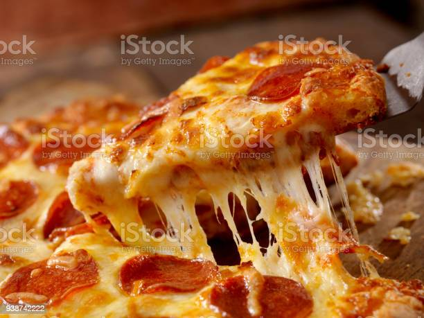

Homemade Pepperoni Pizza recipe

Description
Pepperoni pizza is an American pizza variety which includes one of the country's most beloved toppings.
Pepperoni is actually a corrupted form of peperoni (one "p"), which denotes a large pepper in Italian,
but nowadays it denotes a spicy salami, usually made with a mixture of beef, pork, and spices.
The preparation varies from one state to another,
but the popularity of this pizza has made it a staple across the United States,
and it's usually prepared simply with mozzarella, tomato sauce, and pepperoni.
Ingredients
- 16 ounces pizza dough, store-bought or homemade
- 1/2 cup pizza sauce
- 18 to 20 slices pepperoni
- 12 ounces mozzarella cheese, grated
- 1/2 teaspoon ground black pepper
- 1 teaspoon fresh oregano, optional
- Flour for rolling and shaping dough
Steps
- Preheat oven to 500 fahrenheit. If you are using a pizza stone,
preheat it in the oven for at least 20 minutes so it is nice and hot as well.
- Stir together the ingredients.
The sauce recipe makes just enough for one large pizza.
- Roll out dough on a lightly floured surface.
If it's hard to roll, let it rest for 5 minutes so it can come to room temperature.
- Transfer the dough to a lightly dusted pizza peel. Alternatively, fit it into a large cast-iron.
- Add sauce in a light layer all over the pizza, leaving about 1/4-inch crust around the edges. Chop half of the pepperoni and sprinkle it over the sauce. Top the pizza with grated cheese and the rest of the pepperoni. Season with black pepper.
- If you're using a pizza stone, carefully slide pizza into the center of the preheated pizza stone. Cook for 6 minutes, then rotate the pizza halfway so it cooks evenly. Cook for another 6-8 minutes, or until the crust is golden brown and charred in spots.
- Use pizza peel to slide pizza out onto a cutting board. Let the pizza rest for a minute and slice into pieces. Season with fresh oregano (optional). Serve while warm with a side salad.